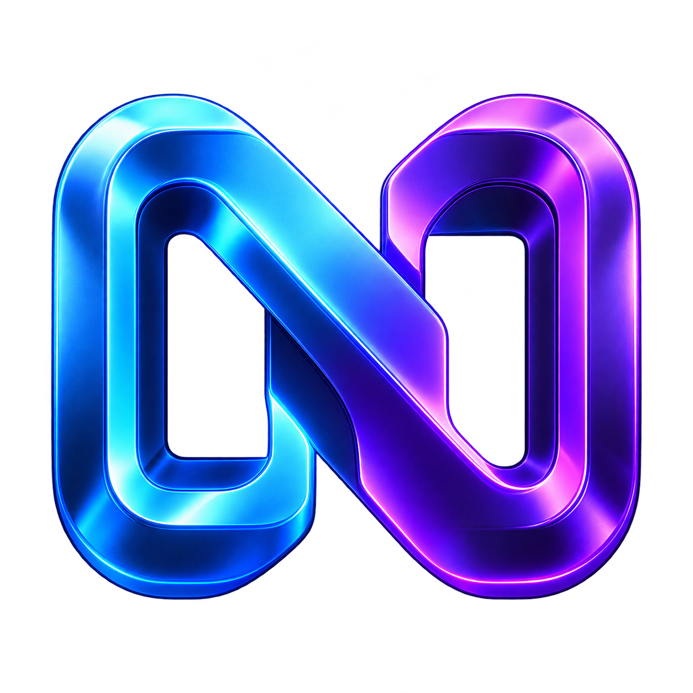

Noctra.exe↗
Your launch point
Open the native Windows launcher to start the original chiaki-ng client, with a setup guide close at hand

NoctraA familiar console, a different screen
Your starting point for local Remote Play, powered by chiaki-ng
Windows 10 / 11 x64 · Portable launcher · By Solitary
ONE CONNECTION, A NEW PERSPECTIVE ↓Connection illustration · Not a gameplay capture
Built for Windows10 / 11 · x64
A local connectionYour console and PC, one network
Powered by chiaki-ngThe original streaming client
Noctra handles the starting point
chiaki-ng handles the stream
Open the native Windows launcher to start the original chiaki-ng client, with a setup guide close at hand
Convert a 16-digit hexadecimal Account-ID to the little-endian Base64 format used for pairing
First-run setup downloads the pinned upstream engine from official GitHub and checks its SHA-256
An 18-second product film
Created for Noctra
Product animation with original music · Not live gameplay
Download video ↙Download the Windows ZIP, extract the entire folder and open Noctra.exe · Keep its docs and scripts alongside it
Click Open streaming client and accept the one-time chiaki-ng download, about 97 MB · Keep the setup window open until it finishes
Use the same local network, enable Remote Play on your console, then register it in chiaki-ng with the actual Account-ID and a fresh Add Device PIN
Select the registered console in chiaki-ng to start your stream · Connect a compatible controller to your PC when you want to play
Already have your account’s hexadecimal ID? Convert it locally, then copy the result into chiaki-ng
This helper does not retrieve an account ID, activate an account or bypass pairing · Nothing is sent or storedGet the Noctra Windows launcher, first-run setup script and full offline guide in one small ZIP
Download for Windows ↗LOCAL PLAY, A NEW PERSPECTIVE
The streaming engine is not bundled · First-run setup downloads about 97 MB separately · The launcher is unsigned · Windows build and Account-ID tests passed · Live streaming with a PS has not been verified
Download this version once Then use Check updates inside Noctra to update the launcher Your streaming engine and pairings stay in place Companion scripts and guides are included with the full ZIP
Noctra is a launcher and setup companion · The independent chiaki-ng client handles registration, video, audio and controls using the PS’s built-in Remote Play service
No · The website, video, ID converter and ZIP download are public · Console registration still requires the correct Account-ID and a fresh Remote Play PIN inside chiaki-ng
This package is the regular Windows x64 version · You can read this website on other devices, but the supplied Noctra.exe runs on Windows
The archive contains the Windows launcher, documentation, artwork, notices and setup script · The streaming engine is downloaded separately from the official chiaki-ng GitHub release during first-run setup
No · Performance depends on your PS, PC, decoder and network · Protected content or restricted screens may be blocked by the console · Start with the suggested settings in the full guide and adjust for your setup
Noctra is an independent community project by Solitary · It is not affiliated with Sony Interactive Entertainment or the chiaki-ng maintainers · PlayStation and PS are trademarks of their respective owners
If Noctra has been useful to you and you would like to help its creator keep developing it, you can offer your support here.
Support is optional. Thank you for helping Noctra grow.